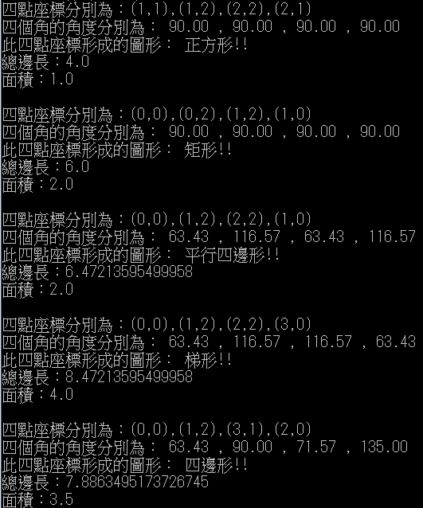
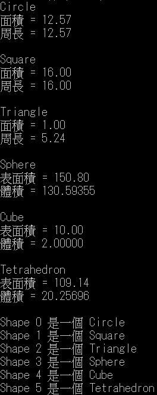

class Quadrilateral{
private int[] a = new int[2];
private int[] b = new int[2];
private int[] c = new int[2];
private int[] d = new int[2];
double abx;
double aby;
double Sab;//邊長ab
double bcx;
double bcy;
double Sbc;//邊長bc
double cdx;
double cdy;
double Scd;//邊長cd
double adx;
double ady;
double Sad;//邊長ad
public Quadrilateral(int[] X, int[] Y){
a[0]=X[0];
a[1]=Y[0];
b[0]=X[1];
b[1]=Y[1];
c[0]=X[2];
c[1]=Y[2];
d[0]=X[3];
d[1]=Y[3];}
double S(){ //總邊長
abx = Math.pow((this.a[0]-this.b[0]),2);
aby = Math.pow((this.a[1]-this.b[1]),2);
Sab = Math.sqrt((abx+aby));//邊長ab
bcx = Math.pow((this.b[0]-this.c[0]),2);
bcy = Math.pow((this.b[1]-this.c[1]),2);
Sbc = Math.sqrt((bcx+bcy));//邊長bc
cdx = Math.pow((this.c[0]-this.d[0]),2);
cdy = Math.pow((this.c[1]-this.d[1]),2);
Scd = Math.sqrt((cdx+cdy));//邊長cd
adx = Math.pow((this.a[0]-this.d[0]),2);
ady = Math.pow((this.a[1]-this.d[1]),2);
Sad = Math.sqrt((adx+ady));//邊長ad
double S_sum = this.Sab + this.Sbc + this.Scd + this.Sad;//總長
return S_sum;}
double area(){ //面積
double temp1 = this.a[0]*this.b[1] + this.b[0]*this.c[1] + this.c[0]*this.d[1] + this.d[0]*this.a[1];
double temp2 = this.b[0]*this.a[1] + this.c[0]*this.b[1] + this.d[0]*this.c[1] + this.a[0]*this.d[1];
double temp = temp1 - temp2;
double Ar = 0.5 * Math.abs(temp);
return Ar;}
String angle_Shape(){ //判斷角度及形狀
System.out.printf("四點座標分別為：(%d,%d),(%d,%d),(%d,%d),(%d,%d)\n",this.a[0],this.a[1],this.b[0],this.b[1],this.c[0],this.c[1],this.d[0],this.d[1]);
abx = Math.pow((this.a[0]-this.b[0]),2);
aby = Math.pow((this.a[1]-this.b[1]),2);
Sab = Math.sqrt((abx+aby));//邊長ab
bcx = Math.pow((this.b[0]-this.c[0]),2);
bcy = Math.pow((this.b[1]-this.c[1]),2);
Sbc = Math.sqrt((bcx+bcy));//邊長bc
cdx = Math.pow((this.c[0]-this.d[0]),2);
cdy = Math.pow((this.c[1]-this.d[1]),2);
Scd = Math.sqrt((cdx+cdy));//邊長cd
adx = Math.pow((this.a[0]-this.d[0]),2);
ady = Math.pow((this.a[1]-this.d[1]),2);
Sad = Math.sqrt((adx+ady));//邊長ad
//四個邊的向量vector
double[] vec_ab = {(this.b[0]-this.a[0]),(this.b[1]-this.a[1])};
double[] vec_bc = {(this.c[0]-this.b[0]),(this.c[1]-this.b[1])};
double[] vec_cd = {(this.d[0]-this.c[0]),(this.d[1]-this.c[1])};
double[] vec_da = {(this.a[0]-this.d[0]),(this.a[1]-this.d[1])};
double i = ((-vec_da[0])*vec_ab[0]+(-vec_da[1])*vec_ab[1])/(this.Sad*this.Sab);
double j = ((-vec_ab[0])*vec_bc[0]+(-vec_ab[1])*vec_bc[1])/(this.Sab*this.Sbc);
double k = ((-vec_bc[0])*vec_cd[0]+(-vec_bc[1])*vec_cd[1])/(this.Sbc*this.Scd);
double l = ((-vec_cd[0])*vec_da[0]+(-vec_cd[1])*vec_da[1])/(this.Scd*this.Sad);
//四邊形各角度
double A = Math.toDegrees(Math.acos(i));
double B = Math.toDegrees(Math.acos(j));
double C = Math.toDegrees(Math.acos(k));
double D = Math.toDegrees(Math.acos(l));
double all = A + B + C + D ;
System.out.printf("四個角的角度分別為： %.2f , %.2f , %.2f , %.2f\n",A,B,C,D);
//判斷形狀
System.out.print("此四點座標形成的圖形： ");
if((this.Sab==this.Sbc && this.Sbc==this.Scd && this.Scd==this.Sad) && (A==90 && B==90 && C==90 && D==90))
System.out.println("正方形!!");
else if(A==90 && B==90 && C==90 && D==90)
System.out.println("矩形!!");
else if((A+C==180 && B+D==180) || (A+C==180 && B+D==180) )
System.out.println("梯形!!");
else if((A+D==180 && B+C==180)||(A+B==180 && D+C==180) )
System.out.println("平行四邊形!!");
else if(all == 360)
System.out.println("四邊形!!");
else
System.out.println("它不是一個四邊形!!");
return String.format( "%.2f, %.2f, %.2f, %.2f", A, B,C,D );}
}
class Parallelogram extends Quadrilateral{
public Parallelogram(int[] X, int[] Y){
super(X,Y);}
}
class Rectangle extends Parallelogram{
public Rectangle(int[] X, int[] Y){
super(X,Y);}
}
class Square extends Rectangle{
public Square(int[] X, int[] Y){
super(X,Y);}
}
class HW4_3{
public static void main( String args[] ){
int x1[] = {1,1,2,2};//正方形
int y1[] = {1,2,2,1};
Quadrilateral run1 = new Quadrilateral(x1,y1);
run1.angle_Shape();
System.out.println("總邊長："+run1.S());
System.out.println("面積："+run1.area());
System.out.println();
int x2[] = {0,0,1,1};//矩形
int y2[] = {0,2,2,0};
Quadrilateral run2 = new Quadrilateral(x2,y2);
run2.angle_Shape();
System.out.println("總邊長："+run2.S());
System.out.println("面積："+run2.area());
System.out.println();
int x3[] = {0,1,2,1};//平行四邊形
int y3[] = {0,2,2,0};
Quadrilateral run3 = new Quadrilateral(x3,y3);
run3.angle_Shape();
System.out.println("總邊長："+run3.S());
System.out.println("面積："+run3.area());
System.out.println();
int x4[] = {0,1,2,3};//梯形
int y4[] = {0,2,2,0};
Quadrilateral run4 = new Quadrilateral(x4,y4);
run4.angle_Shape();
System.out.println("總邊長："+run4.S());
System.out.println("面積："+run4.area());
System.out.println();
int x5[] = {0,1,3,2};//四邊形
int y5[] = {0,2,1,0};
Quadrilateral run5 = new Quadrilateral(x5,y5);
run5.angle_Shape();
System.out.println("總邊長："+run5.S());
System.out.println("面積："+run5.area());
System.out.println();}
}

import java.awt.Point;
//形狀
abstract class Shape{
protected int vertices[][] = new int[8][3];
public Shape(int V[][]){
int i, j;
for(i=0 ; i< V.length ; i++)
for(j=0 ; j< V[0].length ; j++)
vertices[i][j] = V[i][j];}
protected abstract double area();}
//平面
abstract class TwoDimensionalShape extends Shape{
public TwoDimensionalShape(int V[][]){
super(V);}
protected abstract double S();}
//立體
abstract class ThreeDimensionalShape extends Shape{
public ThreeDimensionalShape(int V[][]){
super(V);}
protected abstract double volume();}
//圓形
class Circle extends TwoDimensionalShape{
private double radius;
public Circle(int V[][]){
super(V);
double x,y;
x = this.vertices[0][0] - this.vertices[1][0];
y = this.vertices[0][1] - this.vertices[1][1];
this.radius = Math.sqrt(Math.pow(x,2)+Math.pow(y,2));}
public double S(){
return 2*this.radius*Math.PI;}
public double area(){
return Math.pow(this.radius,2)*Math.PI;}
}
//矩形
class Square extends TwoDimensionalShape{
private double edge;
public Square(int V[][]){
super(V);
double x,y;
x = this.vertices[0][0] - this.vertices[1][0];
y = this.vertices[0][1] - this.vertices[1][1];
this.edge = Math.sqrt(Math.pow(x,2)+Math.pow(y,2));}
public double S(){
int i;
double x,y;
double sum=0;
for(i=0 ; i< 3 ; i++){
x = this.vertices[i][0] - this.vertices[i+1][0];
y = this.vertices[i][1] - this.vertices[i+1][1];
sum += Math.sqrt(Math.pow(x,2)+Math.pow(y,2));}
x = this.vertices[0][0] - this.vertices[3][0];
y = this.vertices[0][1] - this.vertices[3][1];
sum += Math.sqrt(Math.pow(x,2)+Math.pow(y,2));
return sum;}
public double area(){
return Math.pow(this.edge,2);}
}
//三角形
class Triangle extends TwoDimensionalShape{
public Triangle(int V[][]){
super(V);}
public double S(){
int i;
double x,y;
double sum=0;
for(i=0 ; i< 2 ; i++){
x = this.vertices[i][0] - this.vertices[i+1][0];
y = this.vertices[i][1] - this.vertices[i+1][1];
sum += Math.sqrt(Math.pow(x,2)+Math.pow(y,2));}
x = this.vertices[0][0] - this.vertices[2][0];
y = this.vertices[0][1] - this.vertices[2][1];
sum += Math.sqrt(Math.pow(x,2)+Math.pow(y,2));
return sum;}
public double area(){
int last_x,last_y,x,y,i,a=0,b=0;
last_x = this.vertices[0][0];
last_y = this.vertices[0][1];
for(i=1 ; i< 3 ; i++){
x = this.vertices[i][0];
y = this.vertices[i][1];
a += last_x * y;
b += last_y * x;
last_x = x;
last_y = y;}
x = this.vertices[0][0];
y = this.vertices[0][1];
a += last_x * y;
b += last_y * x;
return 0.5*Math.abs(a-b);}
}
//球體
class Sphere extends ThreeDimensionalShape{
private double radius;
public Sphere(int V[][]){
super(V);
double x,y,z;
x = this.vertices[0][0] - this.vertices[1][0];
y = this.vertices[0][1] - this.vertices[1][1];
z = this.vertices[0][2] - this.vertices[1][2];
this.radius = Math.sqrt(Math.pow(x,2)+Math.pow(y,2)+Math.pow(z,2));}
public double volume(){
return (4/3)*Math.PI*Math.pow(this.radius,3);}
public double area(){
return 4*Math.PI*Math.pow(this.radius,2);}
}
//立方體
class Cube extends ThreeDimensionalShape{
private double leng;
private double width;
private double height;
public Cube(int V[][]){
super(V);
double x,y,z;
x = this.vertices[0][0] - this.vertices[1][0];
y = this.vertices[0][1] - this.vertices[1][1];
z = this.vertices[0][2] - this.vertices[1][2];
this.leng = Math.sqrt(Math.pow(x,2)+Math.pow(y,2)+Math.pow(z,2));
x = this.vertices[2][0] - this.vertices[1][0];
y = this.vertices[2][1] - this.vertices[1][1];
z = this.vertices[2][2] - this.vertices[1][2];
this.width = Math.sqrt(Math.pow(x,2)+Math.pow(y,2)+Math.pow(z,2));
x = this.vertices[3][0] - this.vertices[4][0];
y = this.vertices[3][1] - this.vertices[4][1];
z = this.vertices[3][2] - this.vertices[4][2];
this.height = Math.sqrt(Math.pow(x,2)+Math.pow(y,2)+Math.pow(z,2));}
public double volume(){
return this.leng*this.width*this.height;}
public double area(){
return 2*(this.leng*this.width+this.width*this.height+this.height*this.leng);}
}
//四面體
class Tetrahedron extends ThreeDimensionalShape{
public Tetrahedron(int V[][]){
super(V);}
public double volume(){
int vector_AB[] = {this.vertices[1][0]-this.vertices[0][0],this.vertices[1][1]-this.vertices[0][1],this.vertices[1][2]-this.vertices[0][2]};
int vector_AC[] = {this.vertices[2][0]-this.vertices[0][0],this.vertices[2][1]-this.vertices[0][1],this.vertices[2][2]-this.vertices[0][2]};
int vector_CB[] = {this.vertices[1][0]-this.vertices[2][0],this.vertices[1][1]-this.vertices[2][1],this.vertices[1][2]-this.vertices[2][2]};
int i,j;
int normals[] = {vector_AB[1]*vector_AC[2]-vector_AC[1]*vector_AB[2],
1-(vector_AB[0]*vector_AC[2]-vector_AC[0]*vector_AB[2]),
vector_AB[0]*vector_AC[1]-vector_AC[0]*vector_AB[1]};
int d = this.vertices[0][0]*normals[0]+this.vertices[0][1]*normals[1]+this.vertices[0][2]*normals[2];
double A = Math.abs(this.vertices[3][0]*normals[0]+this.vertices[3][1]*normals[1]+this.vertices[3][2]*normals[2]-d);
double B = Math.sqrt(Math.pow(normals[0],2)+Math.pow(normals[1],2)+Math.pow(normals[2],2));
int area_ABC[][] = new int[3][3];
for(i=0 ; i< 3 ; i++)
for(j=0 ; j< 3 ; j++)
area_ABC[i][j] = this.vertices[i][j];
return single_area(area_ABC)*(A/B)/3;}
public double area(){
int i,j;
int area_ABC[][] = new int[3][3];
int area_ABD[][] = new int[3][3];
int area_ACD[][] = new int[3][3];
int area_BCD[][] = new int[3][3];
for(i=0 ; i< 3 ; i++)
for(j=0 ; j< 3 ; j++)
area_ABC[i][j] = this.vertices[i][j];
for(i=1 ; i< 3 ; i++)
for(j=0 ; j< 3 ; j++)
area_BCD[i][j] = this.vertices[i][j];
for(i=0 ; i< 3 ; i++)
for(j=0 ; j< 3 ; j++)
area_ABD[i][j] = area_ABC[i][j];
for(i=0 ; i< 3 ; i++)
area_ABD[2][i] = area_BCD[2][i];
for(i=0 ; i< 3 ; i++)
for(j=0 ; j< 3 ; j++)
area_ACD[i][j] = area_BCD[i][j];
for(i=0 ; i< 3 ; i++)
area_ACD[0][i] = area_ABC[0][i];
return single_area(area_ABC)+single_area(area_ABD)+single_area(area_ACD)+single_area(area_BCD);}
public double single_area(int p[][]){
int vector_OA[] = {p[1][0]-p[0][0],p[1][1]-p[0][1],p[1][2]-p[0][2]};
int vector_OB[] = {p[2][0]-p[0][0],p[2][1]-p[0][1],p[2][2]-p[0][2]};
int inner = vector_OA[0]*vector_OB[0] + vector_OA[1]*vector_OB[1] + vector_OA[2]*vector_OB[2];
double OAOB = distance(vector_OA)*distance(vector_OB);
return 0.5*OAOB*Math.sqrt(1-Math.pow(inner/OAOB,2));}
public double distance(int v[]){
return Math.sqrt(Math.pow(v[0],2)+Math.pow(v[1],2)+Math.pow(v[2],2));}
}
public class HW5_1{
public static void main(String args[]){
int circle1[][] = {{0,0},{0,2}};
Circle circle = new Circle(circle1);
int square1[][] = {{-2,-2},{2,-2},{2,2},{-2,2}};
Square square = new Square(square1);
int triangle1[][] = {{0,0},{1,2},{0,2}};
Triangle triangle = new Triangle(triangle1);
int sphere1_v[][] = {{0,0,0},{2,2,2}};
Sphere sphere = new Sphere(sphere1_v);
int cube1_v[][] = {{0,0,0},{2,0,0},{2,1,0},{0,1,0},{0,1,1},{0,0,1},{2,0,1},{2,1,1}};
Cube cube = new Cube(cube1_v);
int tetrahedron1_v[][] = {{-2,-4,-6},{0,0,10},{0,2,2},{2,2,2}};
Tetrahedron tetrahedron = new Tetrahedron(tetrahedron1_v);
Shape shapes[] = new Shape[6];
shapes[0] = circle;
shapes[1] = square;
shapes[2] = triangle;
shapes[3] = sphere;
shapes[4] = cube;
shapes[5] = tetrahedron;
for ( Shape currentShape : shapes ){
System.out.println( currentShape.getClass().getName() );
if ( currentShape instanceof TwoDimensionalShape ){ //如果是平面圖形印出面積和周長
TwoDimensionalShape shape = ( TwoDimensionalShape ) currentShape;
System.out.printf("面積 = %.2f\n周長 = %.2f\n",shape.area(),shape.S());
System.out.println();}
else{ //如果是立體圖形印出表面積和體積
ThreeDimensionalShape shape = ( ThreeDimensionalShape ) currentShape;
System.out.printf("表面積 = %.2f\n體積 = %.2f\n",shape.area(),shape.volume());
System.out.println();}
}
for ( int j = 0; j < shapes.length; j++ )
System.out.printf( "Shape %d 是一個 %s\n", j, shapes[ j ].getClass().getName() );}
}